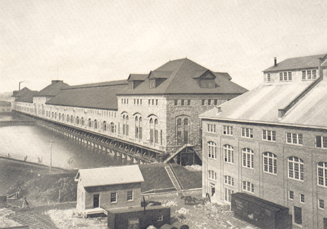

Home • Hydroelectric Power • Pulp & Paper • Transportation • Mining • Forestry • Algoma Steel • Algoma Tubes
Michigan Lake Superior Power Company
|
Michigan Lake Superior Power Company Ontario Lake Superior Power Company
|
Sault Ste. Marie, Michigan, like Sault Ste. Marie, Ontario had been disappointed numerous times when attempts to develop the hydro potential of the St. Mary’s River failed. Francis H. Clergue recognized the potential for development of hydro on both sides of the border. He also realized that hydropower would be a means of attracting industry not only to Sault, Ontario but also to Sault, Michigan, a community once described by Senator Henry Clay as being "beyond the remotest settlement in the United States, if not the moon". Clergue began at approximately the same point in Sault, Michigan as he had across the St. Mary’s River. Smaller syndicates with limited financial backing had begun construction of a power canal and a power plant. Monetary demands of the task far exceeded available monies leaving the community with partially completed installations with limited capacity. Ever the promoter, Clergue negotiated the purchase of exclusive franchises, options and rights to produce hydroelectricity in Sault Ste. Marie, Michigan for $68,370. He then incorporated the Michigan Lake Superior Power Company under Michigan law.  Michigan Lake Superior Power House. In mid-October, 1898, Clergue and his colleague, Edward V. Douglas, submitted a petition to Secretary of War Russell Alexander Alger indicating their intention to commence remedial work on the existing hydroelectric canal. The reason for their petition stemmed from the fact that unlike the plans of their predecessors, the plans approved by Clergue and Douglas called for the construction of a power canal commencing at Ashmun Bay, west of the Rapids. The plans originally also called for the excavation of three separate canals with parallel sluices to service a power plant, a gristmill and a sawmill. There was some concern that the canals would have an impact on the water levels of both Lake Superior and the St. Mary’s River. Meetings of interested parties were held in Sault Ste. Marie, Philadelphia and Detroit before a decision was rendered on 23 February 1899. The petition was denied. Obviously Clergue and Douglas were well matched. Like Clergue, Douglas didn’t accept the decision of the Alger committee. He immediately requested a meeting with Alger at which time he appealed the decision of the committee. He stated that the Michigan Lake Superior Power Company had already expended some $600,000 on the construction of the canal. He asked that the petition be granted on the condition that no waters would be diverted through the power canal until submerged dams were fully completed and on the further condition that if the natural water levels of the Lake or the River were adversely affected by the activities of the Power Company then the Government retained the right to halt all further work. Alger granted the petition on 22 March 1899 on the grounds that the proposed work would not affect the navigability of the waters at or near Sault Ste. Marie. It was only after work was commenced on the canal that the impracticability of Clergue’s plans became evident. Surveys had failed to reveal stretches of quicksand and deep clay. Clergue immediately amended his plans from the excavation of three canals to the excavation of one main canal. The change in plans resulted in the bisection of the community with the portion of the city north of the power canal turned into an island. The power canal is approximately 2.25 miles in length, 200 feet in width and 15 feet in depth. The excavation of the canal made it necessary to construct a series of bridges at major thoroughfares joining the two separate sections of the community and allowing east passage of pedestrians and vehicles alike. The magnitude of the project and the seemingly on-going problems meant that work was perpetually behind schedule. Labour was scarce (probably as a result of the frenetic activity in Sault Ste. Marie, Ontario) and it was not uncommon for entire crews to walk off the job citing hard work and low pay as the reasons. The complaint is somewhat ironic in view of Clergue’s comments to the Toronto Board of Trade that his policy was to pay his workers as well if not better than workers in similar industries. At the same time as the power canal was being excavated, a power plant was under construction. It was designed as a massive four-storey structure. A total of 40 turbines were installed at water level. A portion of the first floor was left vacant for prospective specialized customers and the balance was left vacant for the installation of an additional 40 turbines should they be required. The second floor, which was also allocated as rental space was leased to Union Carbide. Naturally enough, Clergue and Douglas required Union Carbide not only to pay rental money for the space but also to enter into a contract for the purchase of hydroelectricity for the operation of the plant. The first water entered the canal on 11 August 1902, four years after work began. The opening, which was held on 25 October 1902, was a grand and gala event. Special trains brought tourists and investors from New York, Philadelphia, Chicago, Detroit, Montreal and Toronto. Clergue spent many thousands of dollars on fireworks and brass bands. At noon, Clergue’s sister, Helen, threw the gold-plated and jewel encrusted switch to activate the turbines. Lights in the plant began to glow and the electric streetcar started to roll. An estimated 5,000 people then sat down to a sumptuous celebratory meal. The table reputedly stretched from one end of the quarter mile powerhouse to the other. The Michigan Lake Superior Power Company had other interests besides the power canal and miscellaneous pieces of real estate. It was the chief stockholder in the Sault Ste. Marie Light, Heat and Power Company, the American counterpart of the Tagona Company. It also organized the Sault Ste. Marie Terminal Railway Company to operate railway lines along the canal as well as between the Soo Line terminal and a proposed industrial area. It went on to incorporate the Northern Michigan Railroad Company. In connection with this exercise, it acquired considerable land in St. Ignace, Michigan as well as a right of way between Sault Ste. Marie and St. Ignace. Finally, the Michigan Company acquired an interest in the Hatch Electric Smelting and Refining Company. Hatch indicated an interest in locating a plant in Sault Ste. Marie, Michigan and went so far as to operate a pilot plant in the powerhouse where it refined copper, lead and zinc. These plans received a set back however when it was discovered that the foundations of the new plant were not strong enough to bear the full head of water required to develop the maximum horsepower. The Michigan Lake Superior Power Company experienced financial difficulties within months of commencing operations. A total of $5 million in bonds had been issued to pay the costs incurred in getting the Michigan Company up and running. By 1903, this amount had mushroomed to $12 million. With Union Carbide as its sole tenant and paying customer there was no way the Michigan Company could possibly pay down its debt. Like the other subsidiary companies of the Consolidated, its creditors forced the Michigan Lake Superior Company into bankruptcy. Unlike the companies on the Canadian side of the border, however, the Michigan Lake Superior Company continued to operate while in receivership despite the fact that Union Carbide continued to be its only market. Plagued not only by financial problems but also by labour relations problems, the Michigan Company was the last of the allied companies to be discharged from bankruptcy. In 1914 the Union Carbide Company formed the Michigan Northern Power Company which purchased the properties of the Michigan Lake Superior Power Company. |